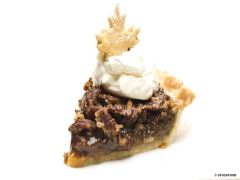

~TheSavoury~
Ingredients
Pecan pie is a traditional dessert usually served for Thanksgiving or Christmas: here is an easy recipe for a pecan pie with sweet cream.
Mix the flour with the sugar and a pinch of salt and form into a mound on the work surface. Make a well in the centre and break the egg into the well. Dot the butter around the edge. Using a knife, chop all the ingredients together to form breadcrumbs, then quickly work by hand to form a smooth pastry. Shape into a ball, wrap in cling film and put in the refrigerator for around 30 minutes. 2 Heat the oven to 200°C (180°C in a fan oven), gas 6 and butter a tart tin. Roll out the pastry on a floured work surface to a thickness of approx. 4 mm and place it in the tart tin. Cut off any overhanging edges and cut leaf shapes out of the leftover pastry. Press the base and sides into the tin well and prick all over with a fork.
Beat together the syrup, sugar, butter, eggs, whisky and a pinch of salt. Roughly chop 100 g of the pecan nuts and mix through the filling. Pour this into the pastry base and top with the rest of the nuts. Bake in the oven for around 50 minutes. If the pie starts to brown too much, cover with aluminium foil. Bake the pastry leaves for approx. 10 minutes. Remove the pie and leaves from the oven and allow to cool. Whip the cream until stiff and pipe small blobs onto the cake. Place a leaf in each blob of cream and serve.